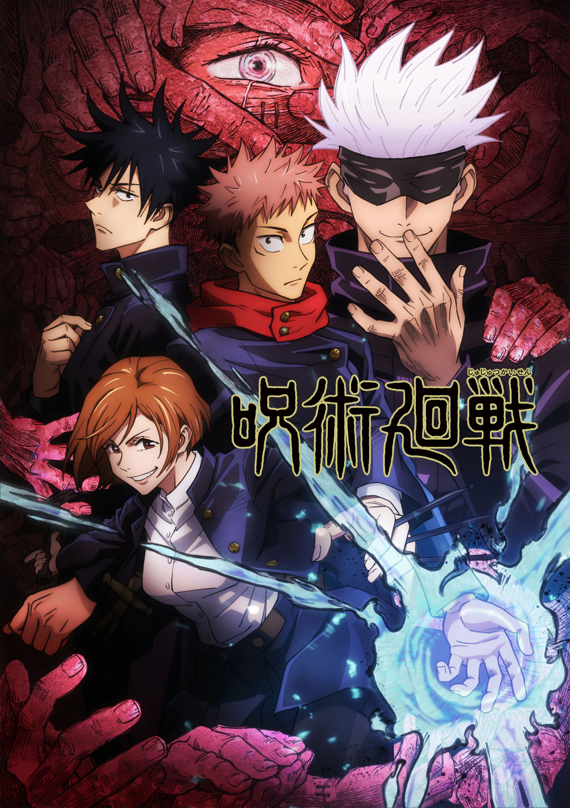
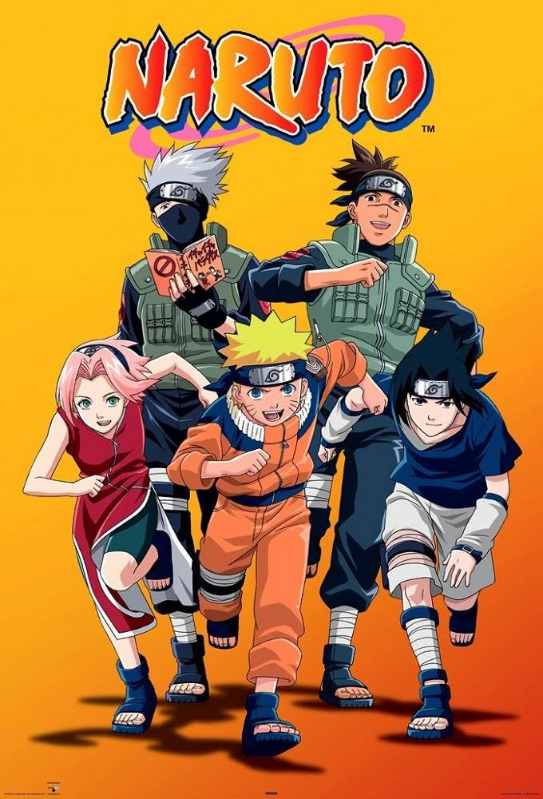
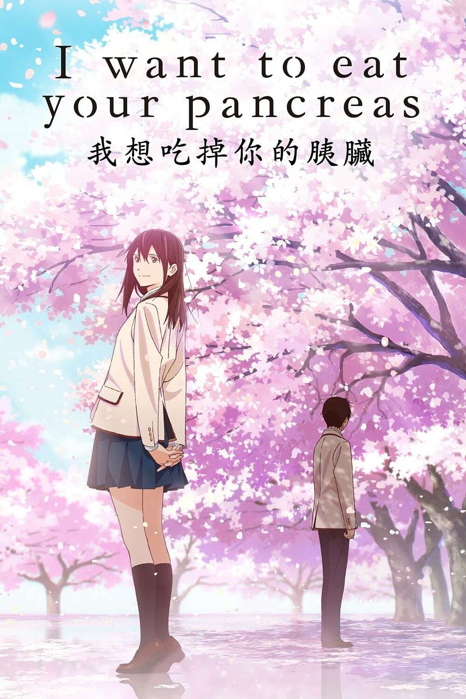
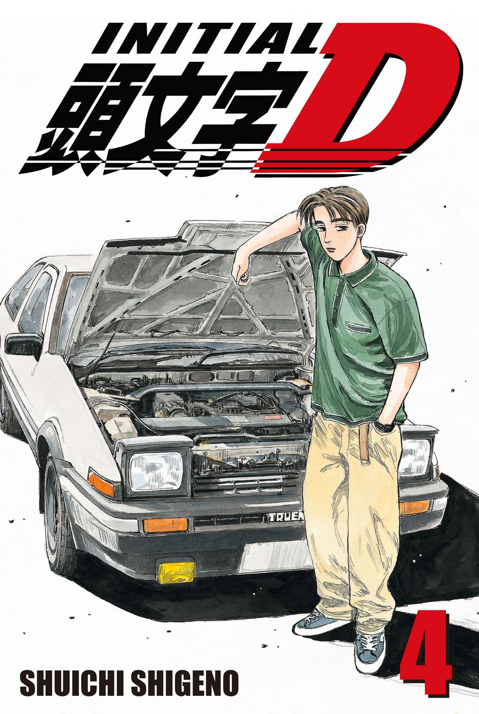

Anime Opinions hot takes
Personal takes, hot and cold. Reviews, favourite tropes, characters and the plot twists that wrecked me. Click any card to expand — titles, where to watch, and why it hits different.

Jujutsu Kaisen
Cursed energy, sorcerers, and Yuji Itadori eating a cursed finger. MAPPA's animation is absolutely unhinged — every fight looks like a sakuga reel.
▼ tap for details
- Studio
- MAPPA
- Year
- 2020–present
- Seasons
- 3 + movie (JJK 0)
- Genre
- Action, Supernatural, Shonen
- Where to watch (NZ)
- Crunchyroll · Netflix · Prime Video · Neon
- My take
- The power system (cursed energy, domains, techniques) is one of the best in modern shonen. Gojo is stupidly overpowered and the fights are choreographed like nothing else. Shibuya arc will destroy you.

Naruto
The classic grind of growth and never giving up. 720 episodes of ninjas, friendship, and Talk no Jutsu. The Naruto vs Pain arc is still peak shonen.
▼ tap for details
- Studio
- Studio Pierrot
- Year
- 2002–2017 (OG + Shippuden)
- Episodes
- 220 (OG) + 500 (Shippuden)
- Genre
- Action, Adventure, Shonen
- Where to watch (NZ)
- Crunchyroll
- My take
- The filler is real but the highs are legendary. Naruto vs Sasuke at the Valley of the End, Pain, Itachi, Madara — this show defined a generation. Skip the filler, keep the canon.

I Want to Eat Your Pancreas
Deeply moving. A quiet, bittersweet story about connection, time, and learning to live. Bring tissues — you will cry.
▼ tap for details
- Studio
- Studio VOLN
- Year
- 2018 (film)
- Runtime
- 109 min
- Genre
- Romance, Drama
- Where to watch (NZ)
- Apple TV (rent/buy) · Netflix (select regions)
- My take
- One of the best anime films for people who "don't watch anime." No action, no fan service — just two people making the most of the time they have. The cherry blossom scenes hit different.

Initial D
Pure adrenaline, tofu delivery, Eurobeat forever. The AE86 downhill king and the greatest racing anime ever made.
▼ tap for details
- Studio
- Studio Gallop / Pastel / Studio Comet
- Year
- 1998–2020 (5 stages + movies + OVAs)
- Episodes
- 26 (First Stage) + more across seasons
- Genre
- Racing, Sports, Drama
- Where to watch (NZ)
- Crunchyroll · Amazon Prime Video
- My take
- Takumi's AE86 on Mount Akina at night, Eurobeat blasting — this is the purest car anime ever. The CGI racing aged surprisingly well, and the character drama between brothers, rivals, and rivals-turned-friends is genuinely great. Bunta's VA could narrate paint drying and I'd listen.